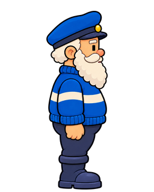
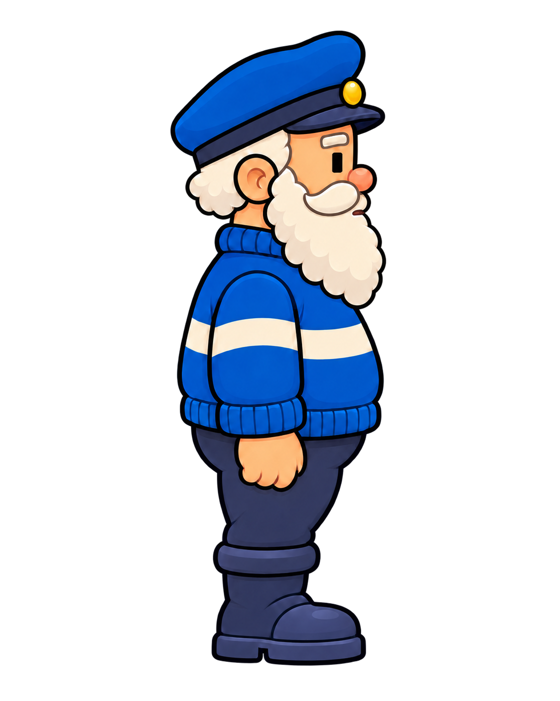
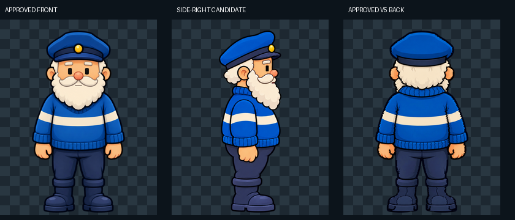
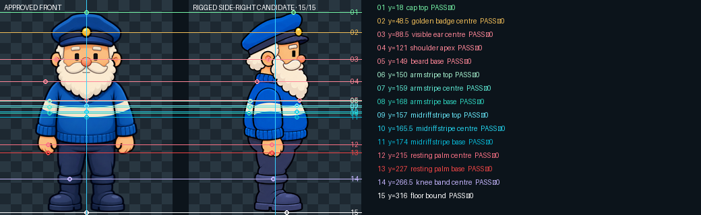
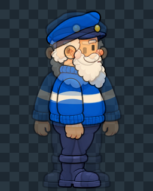

New side-right candidate

This is the first finished-art candidate authorized by the approved construction motion. Nothing has entered Final or production.
Review priority: identity and silhouette. The candidate is the same height as the approved front/back, uses one broad uniform stripe, keeps rear hair distinct from the forward beard, and places all 15 registered features on their horizontal datums.





Every side marker uses the approved-front y value. The rendered feature evidence beneath each marker is checked from the final registered PNG.

The view widths are projections, not stretch targets. Compare cap top, badge, ear, beard base, stripes, hand, knee and floor horizontally.

| Landmark | target y | candidate y | Δ | result |
|---|---|---|---|---|
| cap top | 18 | 18 | 0 | PASS |
| golden badge centre | 48.5 | 48.5 | 0 | PASS |
| visible ear centre | 88.5 | 88.5 | 0 | PASS |
| shoulder apex | 121 | 121 | 0 | PASS |
| beard base | 149 | 149 | 0 | PASS |
| arm stripe top | 150 | 150 | 0 | PASS |
| arm stripe centre | 159 | 159 | 0 | PASS |
| arm stripe base | 168 | 168 | 0 | PASS |
| midriff stripe top | 157 | 157 | 0 | PASS |
| midriff stripe centre | 165.5 | 165.5 | 0 | PASS |
| midriff stripe base | 174 | 174 | 0 | PASS |
| resting palm centre | 215 | 215 | 0 | PASS |
| resting palm base | 227 | 227 | 0 | PASS |
| knee band centre | 266.5 | 266.5 | 0 | PASS |
| floor bound | 316 | 316 | 0 | PASS |
This candidate is derived from the approved Prime identity, V5 rear, KP Rig V1 and approved Motion V3. Approval would make it the side-right orthographic artwork authority and permit turn-animation authoring. It would not promote production sprites.